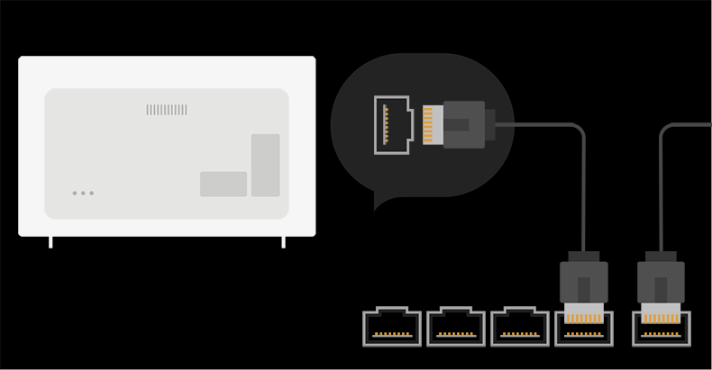
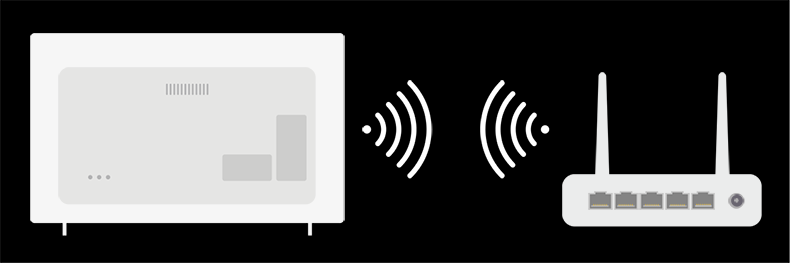

Configuración de red
Si configura los ajustes de la red podrá utilizar varios servicios, como contenidos y aplicaciones en línea.
Ajuste de una red por cable

-
Conecte el puerto LAN de la TV al router mediante un cable LAN.
Antes de realizar esta operación debe conectar el router a Internet.Si el router admite DHCP, el televisor se conectará automáticamente a la red al utilizar un cable LAN. -
Pulse el botón
 del mando a distancia.
del mando a distancia.
-
Seleccione
 Conexión Conexión cableada (Ethernet).
Conexión Conexión cableada (Ethernet).
Para ver los detalles, Recorrido por ajustes Conexión Conexión cableada (Ethernet) en Guía del usuario.
Configuración de una red inalámbrica

- Encienda el router conectado a Internet.
-
Pulse el botón del mando a distancia.
-
Seleccione Conexión Conexión Wi-Fi.
- Cuando se complete la búsqueda de red, aparecerá la lista de redes disponibles para la conexión.
-
Seleccione una red a la que conectarse.
Si su router LAN inalámbrico está protegido con contraseña, introduzca la contraseña configurada para el router.
Para ver los detalles, Recorrido por ajustes Conexión Conexión Wi-Fi en Guía del usuario.
Advertencias de configuración de la red
Utilice un cable LAN estándar (conéctelo a Cat7 o superior con conector RJ45, 10 Base-T o puerto LAN 100 Base TX).
La restauración del módem puede solucionar algunos problemas en la conexión de red. Apague el módem, desconéctelo, vuelva a conectarlo y enciéndalo para solucionar el problema.
LG Electronics no se hace responsable de ningún fallo o problema de conexión a la red, así como de errores o funcionamientos incorrectos provocados por la conexión a la red.
Es posible que la conexión de red no funcione correctamente a causa de los ajustes de red o del proveedor de servicios de Internet.
El servicio DSL debe utilizar un módem DSL; y el servicio de cable debe utilizar un módem por cable. Debido a que sólo hay disponibles un número limitado de conexiones a la red, es posible que la configuración de la red de TV no esté disponible según su contrato con el proveedor de servicios de Internet. (Si el contrato no le permite más de un dispositivo por línea, únicamente se podrá utilizar el equipo que ya esté conectado).
Las redes inalámbricas pueden experimentar interferencias de otros dispositivos que utilicen la frecuencia de 2,4 GHz (teléfonos inalámbricos, dispositivos Bluetooth u hornos microondas). También pueden producirse interferencias al usar la frecuencia de 5 GHz, aunque no es lo más habitual.
El entorno inalámbrico puede ralentizar el servicio de red inalámbrica.
Si no apaga todas las redes domésticas locales, podría provocar un tráfico excesivo en algunos dispositivos.
El AP debe ser compatible con las conexiones inalámbricas y la función de conexión inalámbrica debe estar activada en el dispositivo que va a conectarse al AP (punto de acceso). Póngase en contacto con el proveedor de servicios para consultar la disponibilidad de la conexión inalámbrica en el punto de acceso.
Compruebe la configuración del SSID y de seguridad del AP. Consulte la documentación correspondiente para obtener información acerca de la configuración del SSID y de seguridad del AP.
Una configuración no válida en los dispositivos de red (compartidor de línea o concentrador cableado / inalámbrico) puede hacer que la TV funcione con lentitud o que no lo haga correctamente. Instale los dispositivos correctamente según las instrucciones del manual y la red.
El método de conexión puede variar en función del fabricante del AP.
Para resolver cualquier problema relacionado con esta función, consulte la sección Resolución de problemas de la Guía del usuario.